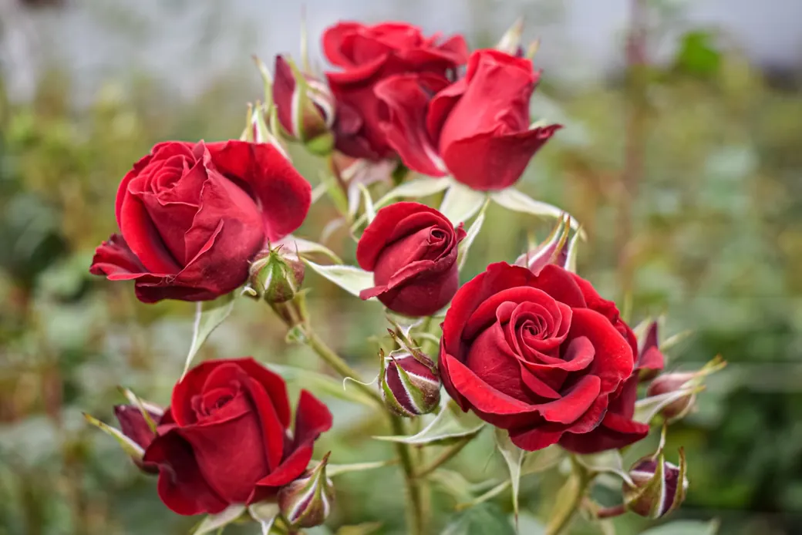

¿A dónde van las rosas de Ecuador?
De la Sierra ecuatoriana a floristerías de otros continentes, el recorrido de una flor que viaja antes de abrirse.

Imagina dos rosas que crecieron en la misma hilera. Una acaba en un ramo que alguien compra al salir del trabajo en Estados Unidos. La otra termina en una mesa de celebración en Europa. Esas escenas son imaginadas. Los destinos, en cambio, forman parte de una ruta comercial real. Según el Boletín Situacional Rosas 2024, Estados Unidos, Kazajistán, Países Bajos e Italia estuvieron entre los principales compradores de rosas frescas ecuatorianas ese año.
Antes de ese viaje, alguien decide cuándo cortar cada flor. Un botón todavía firme tiene tiempo para abrirse durante los días siguientes. Tras la cosecha, los tallos se agrupan y se protegen para el traslado. El frío ayuda a conservarlos en el camino. Cuando llegan a una floristería, empieza otra etapa: alguien vuelve a cortar los tallos, los pone en agua y elige con qué flores acompañarlos.
El país donde entra una caja tampoco cuenta toda la historia. Parte de las flores puede redistribuirse antes de llegar a su comprador final. Por eso es más fácil seguir la ruta comercial del envío que averiguar en qué mesa terminó cada rosa.
La próxima vez que veas una etiqueta que diga «Ecuador», fíjate en el botón. Piensa en la distancia que ya recorrió y en todo lo que todavía le queda por abrir. Si vienes a YUA, la experiencia entre rosas permite acercarte al principio de esa historia y ver la flor mientras todavía crece.
Fuente: Boletín Situacional Rosas 2024, con datos del Banco Central del Ecuador.